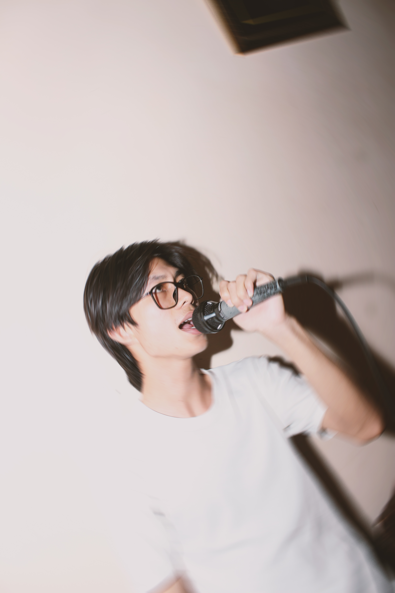
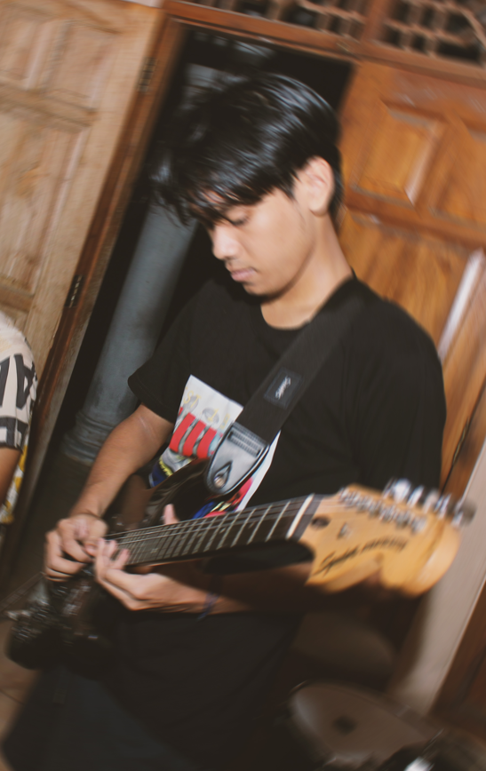
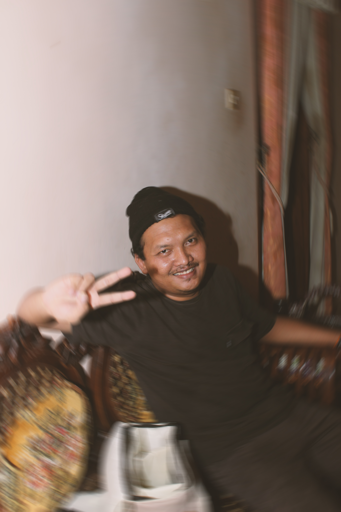
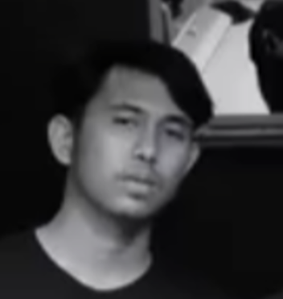

Anggota

Duta Ramadhan
Vokal utama · Penulis lirik
Vokalis sekaligus penulis lirik. Gaya vokal emotif dan kuat di panggung.

Muhammad Dzaky
Gitar Lead · Programming
Gitaris yang bertanggung jawab atas aransemen dan juga mengatur elemen elektronik.

Kadek Widhi
Drummer · Sawiters
Menjaga groove dan dinamika lagu.

Artha Kautsar
Bassist · Tukang Ngopi
Jantung ritme band. Bassline yang ia ciptakan bukan sekadar nada rendah, tapi denyut yang menggerakkan seluruh lagu.

Tomi Satriani
Gitar Rythem · Ustadz
Penjaga harmoni di setiap lagu. Dengan permainan gitar yang konsisten dan penuh groove.

Noffendy Nugroho
Crew · Assistant Manager
Masnux adalah sosok di balik layar yang memastikan semua berjalan lancar.

Made Purnawirawan
Manager · Boss
Om Made adalah sosok di balik layar yang memastikan semua berjalan lancar. Dari logistik hingga manajemen.

Rizky PM
Penulis Lirik · Keyboardist
Rizky PM adalah sosok di balik layar yang membantu dalam menata lirik dan aransemen musik musik North Echoes.